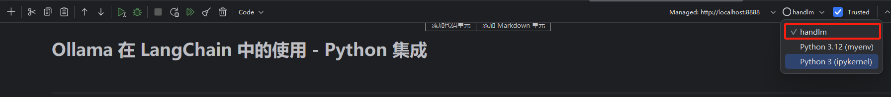
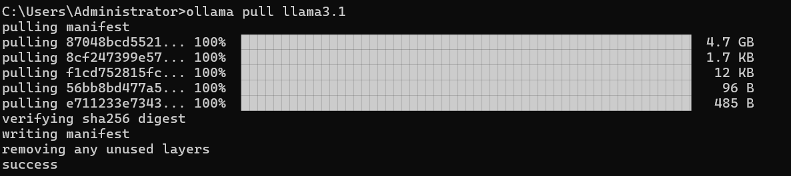
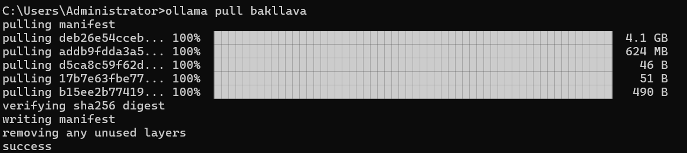
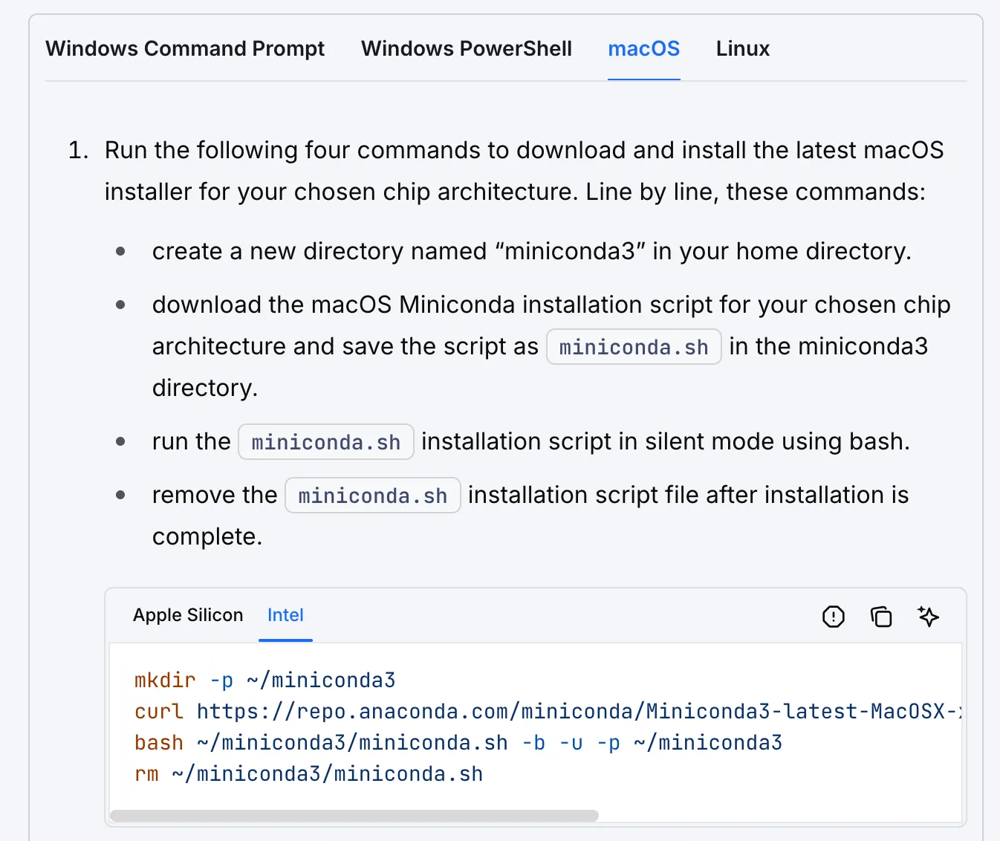
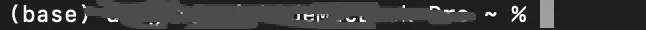

5 Ollama 在 LangChain 中的使用
5.1 Ollama 在 LangChain 中的使用 - Python 集成
5.1.1 简介
本文档介绍了如何在 Python 环境中使用 Ollama 与 LangChain 集成，以创建强大的 AI 应用。Ollama 是一个开源的大语言模型部署工具，而 LangChain 则是一个用于构建基于语言模型的应用的框架。通过结合这两者，我们可以在本地环境中快速部署和使用先进的AI模型。
5.1.2 环境设置
5.1.2.1 安装conda环境
5.1.2.2 配置 Conda 环境
首先，我们需要在 Jupyter 中使用 Conda 环境。在命令行中执行以下命令：
conda create -n handlm python=3.10 -y
conda activate handlm
pip install jupyter -i https://pypi.tuna.tsinghua.edu.cn/simple/
python -m ipykernel install --user --name=handlm --display-name "Python (handlm)"执行完毕后，重启 Jupyter，并选择该环境的 Kernel，如图所示：

5.1.2.3 ⚠️ 注意
注意： 也可以不使用conda虚拟环境，直接使用全局环境。
5.1.2.4 安装依赖
在开始之前，我们需要安装以下包：
langchain-ollama: 用于集成 Ollama 模型到 LangChain 框架中langchain: LangChain 的核心库，提供了构建 AI 应用的工具和抽象langchain-community: 包含了社区贡献的各种集成和工具Pillow: 用于图像处理，在多模态任务中会用到faiss-cpu: 用于构建简单 RAG 检索器
可以通过以下命令安装：
pip install langchain-ollama langchain langchain-community Pillow faiss-cpu -i https://pypi.tuna.tsinghua.edu.cn/simple/5.1.3 下载所需模型并初始化 OllamaLLM
5.1.3.1 下载 llama3.1 模型
- 进入官网 https://ollama.com/download 下载并安装 Ollama 到可用的受支持平台。
- 查看 https://ollama.ai/library 了解所有可用的模型。
- 通过
ollama pull <name-of-model>命令获取可用 LLM 模型（例如：ollama pull llama3.1）。
命令行执行完毕后如图所示：

模型存储位置：
- Mac:
~/.ollama/models/ - Linux（或 WSL）:
/usr/share/ollama/.ollama/models - Windows:
C:\Users\Administrator\.ollama\models
5.1.3.2 也可以使用云上模型
deepseek-v3.1:671b-cloud
gpt-oss:120b-cloud
gpt-oss:20b-cloud
（旧版本ollama或许用不了。）
5.1.4 基本使用示例
5.1.4.1 使用 ChatPromptTemplate 进行对话
ChatPromptTemplate 允许我们创建一个可重用的模板，其中包含一个或多个参数。这些参数可以在运行时动态替换，以生成不同的提示。
from langchain_ollama import ChatOllama
from langchain_core.prompts import ChatPromptTemplate, MessagesPlaceholder
from langchain_core.output_parsers import StrOutputParser
# 1. 本地模型
model = ChatOllama(
model="gpt-oss:120b-cloud", # 换成你本地真实模型
temperature=0.2,
)
# 2. Prompt（显式区分角色 + 上下文）
prompt = ChatPromptTemplate.from_messages([
("system", "你是一个乐于助人的 AI，回答要清晰、简洁、有逻辑。"),
MessagesPlaceholder(variable_name="history"), # 对话上下文
("user", "{question}")
])
# 3. Chain
chain = prompt | model | StrOutputParser()
# 4. 第一次提问（无历史）
history = []
result = chain.invoke({
"question": "你比 GPT-4 厉害吗？",
"history": history
})
print(result)
# 5. 把模型回复加入上下文
history.append(("user", "你比 GPT-4 厉害吗？"))
history.append(("assistant", result))
# 6. 第二次提问（有上下文）
result2 = chain.invoke({
"question": "那你在哪些方面更擅长？",
"history": history
})
print(result2)在创建链部分，使用管道操作符 |，它将 prompt 和 model 连接起来，形成一个处理流程。这种链式操作使得我们可以轻松地组合和重用不同的组件。
invoke 方法触发整个处理链，将我们的问题传入模板，然后将格式化后的提示发送给模型进行处理。
5.1.4.2 流式输出
流式输出是一种在生成长文本时逐步返回结果的技术。这种方法有几个重要的优势：
- 提高用户体验：用户可以立即看到部分结果，而不是等待整个响应完成。
- 减少等待时间：对于长回答，用户可以在完整回答生成之前就开始阅读。
- 实时交互：允许在生成过程中进行干预或终止。
在实际应用中，特别是在聊天机器人或实时对话系统中，流式输出几乎是必不可少的。
from langchain_ollama import ChatOllama
model = ChatOllama(model="gpt-oss:120b-cloud", temperature=0.7)
messages = [
("human", "你好呀"),
]
for chunk in model.stream(messages):
print(chunk.content, end='', flush=True)model.stream() 方法是对 Ollama API 的流式输出接口的封装，它返回一个生成器（generator）对象。当调用 model.stream(messages) 时，会完成以下操作：
- 向 Ollama API 发送请求，开始生成响应。
- API 开始生成文本，但不是等到全部生成完毕才返回，而是一小块一小块地返回。
- 每收到一小块文本，
stream()方法就会 yield 这个文本块。 flush=True确保每个片段立即显示，而不是等待缓冲区填满。
5.1.4.3 工具调用
工具调用是 AI 模型与外部函数或 API 交互的能力。这使得模型可以执行复杂的任务，如数学计算、数据查询或外部服务调用。
from typing import Literal
from langchain_ollama import ChatOllama
from langchain_core.tools import tool
from langchain_core.messages import HumanMessage
# 1️⃣ 定义一个 Tool（函数必须是“可被模型调用”的）
@tool
def simple_calculator(
operation: Literal["add", "sub", "mul", "div"],
x: float,
y: float
) -> float:
"""一个简单的计算器工具，用于执行基础数学运算"""
if operation == "add":
return x + y
elif operation == "sub":
return x - y
elif operation == "mul":
return x * y
elif operation == "div":
if y == 0:
raise ValueError("除数不能为 0")
return x / y
else:
raise ValueError("不支持的操作类型")
# 2️⃣ 初始化模型，并绑定工具
llm = ChatOllama(
model="gpt-oss:120b-cloud", # 换成你本地真实存在的模型
temperature=0,
).bind_tools([simple_calculator])
# 3️⃣ 调用模型
result = llm.invoke("你知道一千万乘以二是多少吗？")
# 4️⃣ 输出模型的原始响应
print(result.content)bind_tools 方法允许我们将自定义函数注册到模型中。这样，当模型遇到需要计算的问题时，它可以调用这个函数来获得准确的结果，而不是依赖于其预训练知识。
这种能力在构建复杂的 AI 应用时非常有用，例如：
- 创建可以访问实时数据的聊天机器人
- 构建能执行特定任务（如预订、查询等）的智能助手
- 开发能进行精确计算或复杂操作的 AI 系统
5.1.4.4 多模态模型
Ollama 支持多模态模型，如 bakllava 和 llava。多模态模型是能够处理多种类型输入（如文本、图像、音频等）的 AI 模型。这些模型在理解和生成跨模态内容方面表现出色，使得更复杂和自然的人机交互成为可能。
首先，需要下载多模态模型。在命令行执行：
ollama pull llava
然后，我们可以使用以下代码来处理图像和文本输入：
from langchain_ollama import ChatOllama
from langchain_core.messages import HumanMessage
from langchain_core.output_parsers import StrOutputParser
llm = ChatOllama(model="llava", temperature=0)
def prompt_func(data):
'''构造多模态输入'''
chain = prompt_func | llm | StrOutputParser()
query_chain = chain.invoke(
{"text": "这个图片里是什么动物啊?", "image": image_b64}
)这里的关键点是：
- 图像预处理：我们需要将图像转换为 base64 编码的字符串。
- 提示函数：
prompt_func创建了一个包含文本和图像的多模态输入。 - 链式处理：我们使用
|操作符将提示函数、模型和输出解析器连接起来。
多模态模型在很多场景下都很有用，比如：
- 图像描述生成
- 视觉问答系统
- 基于图像的内容分析和推荐
5.1.5 进阶用法
5.1.5.1 使用 ConversationChain 进行对话
ConversationChain 是 LangChain 提供的一个强大工具，用于管理多轮对话。它结合了语言模型、提示模板和内存组件，使得创建具有上下文感知能力的对话系统变得简单。
memory = ConversationBufferMemory()
conversation = ConversationChain(
llm=model,
memory=memory,
verbose=True
)
# 进行对话
response = conversation.predict(input="你好，我想了解一下人工智能。")
print("AI:", response)
response = conversation.predict(input="能给我举个AI在日常生活中的应用例子吗？")
print("AI:", response)
response = conversation.predict(input="这听起来很有趣。AI在医疗领域有什么应用？")
print("AI:", response)这里的关键组件是：
ConversationBufferMemory：这是一个简单的内存组件，它存储所有先前的对话历史。ConversationChain：它将语言模型、内存和一个默认的对话提示模板组合在一起。
维护对话历史很重要，因为它允许模型：
- 理解上下文和之前提到的信息
- 生成更连贯和相关的回复
- 处理复杂的多轮对话场景
在实际应用中，你可能需要考虑使用更高级的内存组件，如 ConversationSummaryMemory，以处理长对话并避免超出模型的上下文长度限制。
5.1.5.2 自定义提示模板
设计好的提示模板是创建高效 AI 应用的关键。在这个例子中，我们创建了一个用于生成产品描述的复杂提示：
system_message = SystemMessage(content="""
你是一位经验丰富的电商文案撰写专家。你的任务是根据给定的产品信息创作吸引人的商品描述。
请确保你的描述简洁、有力，并且突出产品的核心优势。
""")
human_message_template = """
请为以下产品创作一段吸引人的商品描述：
产品类型: {product_type}
核心特性: {key_feature}
目标受众: {target_audience}
价格区间: {price_range}
品牌定位: {brand_positioning}
请提供以下三种不同风格的描述，每种大约50字：
1. 理性分析型
2. 情感诉求型
3. 故事化营销型
"""
# 示例使用
product_info = {
"product_type": "智能手表",
"key_feature": "心率监测和睡眠分析",
"target_audience": "注重健康的年轻专业人士",
"price_range": "中高端",
"brand_positioning": "科技与健康的完美结合"
}这个结构有几个重要的设计考虑：
- system_prompt：定义了 AI 的角色和总体任务，设置了整个对话的基调。
- human_message_template：提供了具体的指令和所需信息的结构。
- 多参数设计：允许灵活地适应不同的产品和需求。
- 多样化输出要求：通过要求不同风格的描述，鼓励模型展示其多样性。
设计有效的提示模板时，考虑以下几点：
- 明确定义 AI 的角色和任务
- 提供清晰、结构化的输入格式
- 包含具体的输出要求和格式指导
- 考虑如何最大化模型的能力和创造力
5.1.5.3 构建一个简单的 RAG 问答系统
RAG（Retrieval-Augmented Generation）是一种结合了检索和生成的 AI 技术，它通过检索相关信息来增强语言模型的回答能力。RAG 系统的工作流程通常包括以下步骤：
- 将知识库文档分割成小块并创建向量索引
- 对用户的问题进行向量化，在索引中检索相关文档
- 将检索到的相关文档和原始问题一起作为上下文提供给语言模型
- 语言模型根据检索到的信息生成回答
RAG 的优势在于它可以帮助语言模型访问最新和专业的信息，减少幻觉，并提高回答的准确性和相关性。
LangChain 提供了多种组件，可以与 Ollama 模型无缝集成。这里我们将展示如何将 Ollama 模型与向量存储和检索器结合使用，创建一个简单的 RAG 问答系统。
首先需要确保下载 embedding 模型，可以在命令行执行以下命令：
ollama pull nomic-embed-text然后，我们可以构建 RAG 系统：
# -*- coding: utf-8 -*-
"""
Prerequisites:
1) 本机已安装并启动 Ollama
- macOS: brew install ollama && ollama serve
2) 拉取模型（按需）
- ollama pull llama3.1
- ollama pull nomic-embed-text
Python deps (示例):
pip install -U langchain langchain-ollama langchain-community faiss-cpu
"""
from langchain_ollama import ChatOllama, OllamaEmbeddings
from langchain_text_splitters import RecursiveCharacterTextSplitter
from langchain_community.vectorstores import FAISS
from langchain_core.prompts import ChatPromptTemplate
from langchain_core.runnables import RunnablePassthrough, RunnableLambda
from langchain_core.output_parsers import StrOutputParser
def format_docs(docs) -> str:
"""将检索到的 Document 列表拼成 prompt 可用的 context 文本。"""
return "\n\n".join(
f"[{i+1}] {d.page_content}" for i, d in enumerate(docs)
)
def main():
# 1) 初始化 Ollama LLM & Embeddings
llm = ChatOllama(model="gpt-oss:120b-cloud", temperature=0.2)
embeddings = OllamaEmbeddings(
model="nomic-embed-text"
)
# 2) 准备文档
text = """
Datawhale 是一个专注于数据科学与 AI 领域的开源组织，汇集了众多领域院校和知名企业的优秀学习者，聚合了一群有开源精神和探索精神的团队成员。
Datawhale 以" for the learner，和学习者一起成长"为愿景，鼓励真实地展现自我、开放包容、互信互助、敢于试错和勇于担当。
同时 Datawhale 用开源的理念去探索开源内容、开源学习和开源方案，赋能人才培养，助力人才成长，建立起人与人，人与知识，人与企业和人与未来的联结。
如果你想在Datawhale开源社区发起一个开源项目，请详细阅读Datawhale开源项目指南[https://github.com/datawhalechina/DOPMC/blob/main/GUIDE.md]
""".strip()
# 3) 分割文本（chunk_size / overlap 你可按语料规模调）
text_splitter = RecursiveCharacterTextSplitter(chunk_size=100, chunk_overlap=20)
chunks = text_splitter.split_text(text)
# 4) 建向量库 + retriever
vectorstore = FAISS.from_texts(chunks, embeddings)
retriever = vectorstore.as_retriever(search_kwargs={"k": 4})
# 5) Prompt 模板（严格限定只能用 context）
template = """只能使用下列内容回答问题。如果内容不足以回答，请回复“资料不足”。
内容:
{context}
问题: {question}
"""
prompt = ChatPromptTemplate.from_template(template)
# 6) 组装 RAG 链：question -> 检索 -> format -> prompt -> llm -> string
chain = (
{
"context": retriever | RunnableLambda(format_docs),
"question": RunnablePassthrough(),
}
| prompt
| llm
| StrOutputParser()
)
# 7) 调用
question = "Datawhale 是一个专注于数据科学与 AI 领域的开源组织吗？"
response = chain.invoke(question)
print(response)
if __name__ == "__main__":
main()输出
是的，根据 [1] 的描述，Datawhale 是一个专注于数据科学与 AI 领域的开源组织。这个 RAG 系统的工作原理如下：
- 文本分割：使用
RecursiveCharacterTextSplitter将长文本分割成小块。 - 向量化和索引：使用
OllamaEmbeddings将文本块转换为向量，并用 FAISS 创建向量索引。 - 检索：当收到问题时，系统会将问题向量化，并在 FAISS 索引中检索最相关的文本块。
- 生成回答：将检索到的相关文本块与原始问题一起提供给语言模型，生成最终答案。
RAG 系统在许多真实场景中非常有用，例如：
- 客户服务：可以基于公司的知识库快速回答客户询问。
- 研究辅助：帮助研究人员快速找到相关文献并总结关键信息。
- 个人助手：结合个人笔记和网络信息，提供个性化的信息检索和建议。
5.1.6 结论
通过这些示例，我们展示了如何使用 Ollama 和 LangChain 构建各种 AI 应用，从简单的对话系统到复杂的 RAG 问答系统。这些工具和技术为开发强大的 AI 应用提供了坚实的基础。
Ollama 和 LangChain 的结合为开发者提供了极大的灵活性和可能性。你可以根据具体需求，选择合适的模型和组件，构建出适合你的应用场景的 AI 系统。
随着技术的不断发展，我们期待看到更多创新的应用出现。希望这个指南能够帮助你开始你的 AI 开发之旅，并激发你的创造力，去探索 AI 技术的无限可能。
5.2 问题
1 打开jupyterlab，里面有用venv创建的环境也有conda创建的，所以我到底在什么环境？
你在 JupyterLab 里看到的“环境”，不是你当前 Shell 的环境， 而是 Jupyter 已注册的“内核（kernel）列表”。
所以你现在不是“混在多个环境里”，而是： JupyterLab 这个“前台”，可以同时调度多个 Python 内核。
你只运行一个 JupyterLab 但它可以，调用 venv 的 Python，调用 conda 的 Python，调用 系统 Python，每个 Notebook = 绑定一个内核。
你“在哪个环境里启动 JupyterLab”， 只决定 JupyterLab 这个“服务进程”用谁的 Python； 而“Notebook 实际跑代码用哪个 Python”， 完全由你选的 Kernel 决定。
你的理解可以这样校准：你是在 conda 环境里启动了 JupyterLab，但这并不等于你“所有代码都在 conda 环境里跑”。JupyterLab 本身只是一个服务进程和界面，它用的是你启动它时所在环境的 Python，但它真正负责的事情只是“管理和调度内核”。真正执行你 Notebook 里代码的，是内核进程，而内核进程用的是哪个 Python，完全由你给这个 Notebook 选了哪个 kernel 决定。
只要某个环境（无论是 venv 还是 conda）曾经安装过 ipykernel，并且注册成过一个 kernel，那么这个 kernel 就会出现在 JupyterLab 的内核列表里。之后无论你是从 base conda、某个 conda env，还是甚至系统 Python 启动 JupyterLab，它都能看到并使用这些已经注册过的 kernel。这是 Jupyter 的核心设计，不是混乱，也不是环境污染。
所以，JupyterLab 可以操作所有“被注册过的环境”。但它操作的方式不是“切换当前环境”，而是“为每个 Notebook 启动一个独立的 Python 进程”。一个 Notebook 只会绑定一个 kernel，一个 kernel 只对应一个明确的 Python 可执行文件。你真正“在哪个环境里”，只和当前 Notebook 选中的 kernel 有关，和你最初是从哪个 conda 环境启动 JupyterLab 没有直接关系。
那在 conda 环境里打开 JupyterLab，和在其他环境里打开，区别是什么呢？区别只体现在 JupyterLab 自身，而不体现在 Notebook 的执行环境上。具体来说，启动 JupyterLab 的那个环境，决定了 JupyterLab 这个服务进程用哪个 Python，决定了你给 JupyterLab 安装的插件、扩展、生效在哪个环境，也可能影响它默认能发现哪些内核。但它不会强行把 Notebook 的执行环境限定在这个 conda 环境里，也不会“覆盖”你选择的其他 kernel。
因此，一个非常稳固的理解方式是：JupyterLab 是一个多环境控制台，它本身不代表任何一个项目环境；kernel 才是执行环境。你可以固定从某一个 conda 环境启动 JupyterLab，把它当成一个“工具环境”，然后通过 kernel 明确地选择每个 Notebook 要用的 Python。只要你在 Notebook 里用 sys.executable 看一眼路径，你就能百分之百确定当前代码到底跑在哪个环境里。这才是判断环境的唯一权威方式。
2 faiss-cpu安装失败
更换下载方式
conda install -c conda-forge faiss-cpu -y然后再执行你原来的 pip 安装命令，但去掉 faiss-cpu：
pip install langchain-ollama langchain langchain-community Pillow3 执行**rm -rf ~/.ollama/models**后，模型都没有了，而且云上模型都没了，咋办？
公共模型（如 llama3.2、deepseek-r1）——可以重新 pull，云上模型的话，直接在ollama界面使用云上模型，之后ollama list就会显示云上模型。
如果pull模型失败，可以删除所有模型试试：
rm -rf ~/.ollama/models
4 在构建一个简单的 RAG 问答系统这部分内容的代码，遇见一个问题：ValueError: input not a numpy array。
因为FAISS 与 NumPy 2.x 不兼容，将numpy包的版本，从2.x.x降级成1.26.4，才能成功运行。
查看版本：
import faiss
print(faiss.__version__)
# 1.9.0
import numpy as np
print(np.__version__)
# 1.26.4✅ 已知稳定组合（参考）
| Python | NumPy | FAISS | 状态 |
|---|---|---|---|
| 3.10 / 3.11 | 1.26.x | 1.7.4 | ✅ 稳定 |
| 3.9 | 1.25.x | 1.7.3 | ✅ 稳定 |
5.3 MacOS上安装miniconda
Anaconda 是“全家桶”，Miniconda 是“只有包管理器的空壳”。
Anaconda 是什么。
它是一个已经帮你预装好大量科学计算包的发行版。装完以后，你一开始就自带 numpy、scipy、pandas、matplotlib、sklearn、jupyter 等一大堆东西。目标用户是：刚入门数据科学、希望“装完就能用”的人。
代价也非常直接：
安装体积通常 3–5 GB 起步；
更新慢；
你用不到的大多数包也会长期占着磁盘。
Miniconda 是什么。
它只包含三样东西：
conda 本体；
Python；
最基本的依赖。
除此之外，什么都没有。你需要什么，自己装什么。
Miniconda is a free, miniature installation of Anaconda Distribution that includes only conda, Python, the packages they both depend on, and a small number of other useful packages.
If you need more packages, use the
conda installcommand to install from thousands of packages available by default in Anaconda’s public repo, or from other channels, like conda-forge or bioconda.
5.3.1 macOS（Intel 和 Apple Silicon 都适用）
5.3.1.1 下载
打开这个官方页面：
https://www.anaconda.com/docs/getting-started/miniconda/install#macos-2
直接运行代码。

mkdir -p ~/miniconda3
curl https://repo.anaconda.com/miniconda/Miniconda3-latest-MacOSX-x86_64.sh -o ~/miniconda3/miniconda.sh
bash ~/miniconda3/miniconda.sh -b -u -p ~/miniconda3
rm ~/miniconda3/miniconda.sh代码解读
| 组成部分 | 意思 | 作用 |
|---|---|---|
<font style="color:rgb(68, 71, 70);">bash |
运行环境 | 告诉电脑用 Bash Shell 来运行后面的脚本程序。 |
<font style="color:rgb(68, 71, 70);">~/miniconda3/miniconda.sh |
脚本路径 | 指向你刚才下载好的那个安装包文件。 |
<font style="color:rgb(68, 71, 70);">-b |
Batch (批量/静默) | 最关键的参数。它让安装过程“闭嘴”，不会弹出一大堆用户协议让你按回车，也不会问你“Yes/No”，全部按默认自动完成。 |
<font style="color:rgb(68, 71, 70);">-u |
Update (更新) | 如果你之前装过，这个参数会允许它覆盖或更新现有的文件，防止报错。 |
<font style="color:rgb(68, 71, 70);">-p ~/miniconda3 |
Prefix (安装路径) | 明确指定安装的目标文件夹。这里是安装到主目录下的 <font style="color:rgb(68, 71, 70);">miniconda3文件夹中。 |
5.3.1.2 激活
安装完毕后，重新打开终端or输入：
source ~/miniconda3/bin/activate出现base环境

，说明成功安装了。这个 base 环境不是“可选的”，它是 conda 自身运行所依赖的环境。
5.3.1.3 初始化conda（on all available shells）
conda init --all之后重新打开终端，conda就自动在终端激活了。
5.3.1.4 问题
已经安装好了 Miniconda。安装完成后，重新打开终端，但并没有自动进入 base 环境，也没有看到 (base)。只有在我手动执行
source ~/miniconda3/bin/activate
之后，base 环境才出现，conda 命令才能使用。随后我又执行了
conda init –all，
再重新打开终端，base 环境才会自动出现。为什么会这样？是不是哪里出了问题？
这是一个正常现象，原因是：Miniconda 安装完成 ≠ conda 已初始化到 shell。
Miniconda 的安装分为两个相互独立的步骤：
第一步是把 conda 程序本身安装到磁盘；
第二步是把 conda 的初始化逻辑写入当前使用的 shell 启动文件（如 /.zshrc、/.bashrc）。
在最初安装完成时，虽然 Miniconda 已经存在于 ~/miniconda3，但 conda 的初始化代码并没有成功写入 shell 启动文件，或者写入的 shell 类型与当前实际使用的 shell 不一致。因此，新打开的终端并不知道 conda 的存在，也不会自动激活 base 环境。
当手动执行
source ~/miniconda3/bin/activate
时，只是在当前终端会话中临时加载 conda，使 conda 命令和 base 环境立即可用，但这种方式不具备持久性，新开终端仍然无效。
执行
conda init –all
才是真正完成初始化的关键步骤。该命令会将 conda 的初始化代码写入所有常见 shell 的启动文件中，从而保证以后每次打开终端时，conda 都会被自动加载，并根据配置决定是否自动激活 base 环境。
因此，整个过程并不是安装错误，而是先完成了安装，后补做了初始化。在执行 conda init 之后，conda 的行为才符合预期。